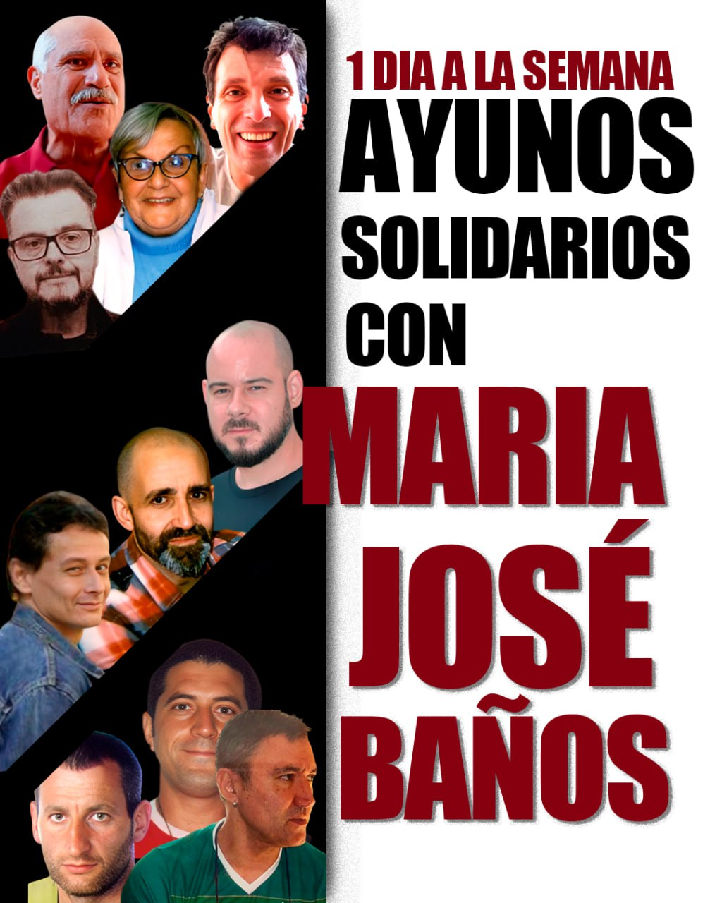

Una nueva semana de ayunos solidarios con Mª José Baños
Continúa una semana más la campaña de ayunos solidarios que están llevando a cabo cada vez más presos pidiendo la libertad inmediata de Mª José Baños. La lista de presos y las jornadas de ayuno que llevan es:
- Víctoria Gómez, presa política de los GRAPO, 71 años. Lleva 8 jornadas de ayuno.
- Juan García, preso político del PCE (r), 74 años. Lleva 8 jornadas de ayuno.
- Israel Torralba, preso político de los GRAPO, 51 años. Lleva 8 jornadas de ayuno.
- Nacho Varela, preso político de los GRAPO, 49 años. Lleva 8 jornadas de ayuno.
- Daniel Pastor, preso político comunista, 52 años. Lleva 7 jornadas de ayuno.
- Patxi Ruiz, preso político vasco, 51 años. Lleva 6 jornadas de ayuno.
- Israel Clemente, preso político de los GRAPO, 55 años. Lleva 5 jornadas de ayuno.
- Fernando García Jodra, preso político vasco, 55 años. Lleva 5 jornadas de ayuno.
- Pablo Hasel, preso político antifascista, 37 años. LLeva 5 jornadas de ayuno.
- Andoni Goikoetxea, preso político vasco, 54 años. Lleva 5 jornadas de ayuno.
- José Ángel Martins Mendoza, preso social anarquista, 50 años. Lleva 2 jornadas de ayuno.